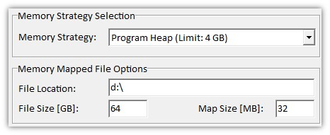

|
内存选项
|

内存策略
内存策略影响软件运行和处理数据时数据对象在内存中的保存方式。
策略之间的主要区别在于软件可以处理的数据量以及加载/保存/计算的性能。
请查看数据对象内存消耗文章，了解测量数据的大小。
这些选项对计算机上的所有用户共享。
内存策略"程序堆"
这是标准"内存策略"；如果没有内存问题，应使用此策略。
软件使用最多4 GB快速物理内存用于数据对象（实际最大 < 4 GB）。
在以下情况下使用此内存策略：
内存策略"内存映射文件"
此策略使软件能够处理大于4 GB的项目数据。
为此，软件在快速硬盘上使用一个大文件来存储数据对象。该文件由操作系统使用快速物理内存自动缓存。
在以下情况下使用此内存策略：
在使用此内存策略之前，请注意以下事项：
文件位置：
内存映射文件的位置；应位于快速固态硬盘上（例如，如果SSD的驱动器号是E，则为"E:\"）。
文件大小：
内存映射文件的大小，即WITec Project/Control的每个实例在SSD上所需的空间量。
映射大小：
用于在内存映射文件和应用程序之间映射数据的物理内存量。
我们推荐值为32 MB。